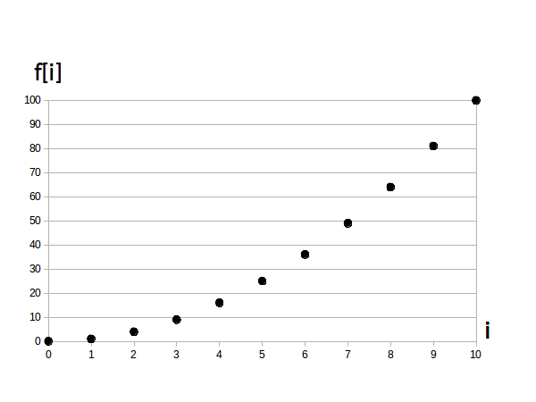

時間領域ディジタル信号とは独立変数 $i$ が時間を表している信号の事です。
この時 $f[i]$ は動画や音声など、時間によって値が変化するデータとなります。
なお話を簡単にするために今回のアクティビティでは $i$ は整数値だけを取ることにします。
さて時間領域アナログ信号と違って $i$ に秒などの単位はありません。
詳しくは後のページで説明しますが、ユーザーが自分で決めたサンプリング間隔 $\tau$ [秒] によって $f[i]$ が何秒地点の信号値なのか変化します。
したがって $i$ は「$i$ 秒」とか「$i$ 時」みたいに単位を付けて呼ばず、単に「時刻 $i$」とだけ呼びます。
例えば下のグラフにおいて「時刻 $i = 3$ 時点における信号値は $f[1] = 9$」、「時刻 $i = 10$ 時点における信号値は $f[10] = 100$」などと言います。
